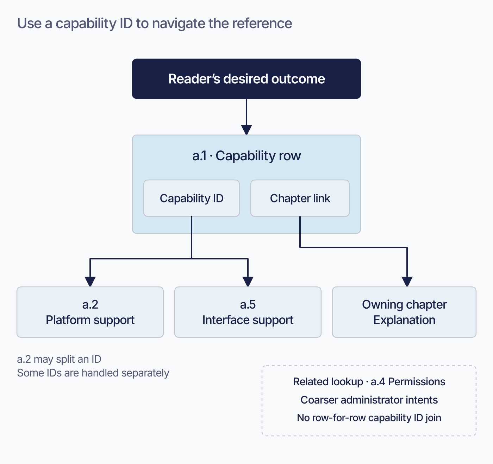
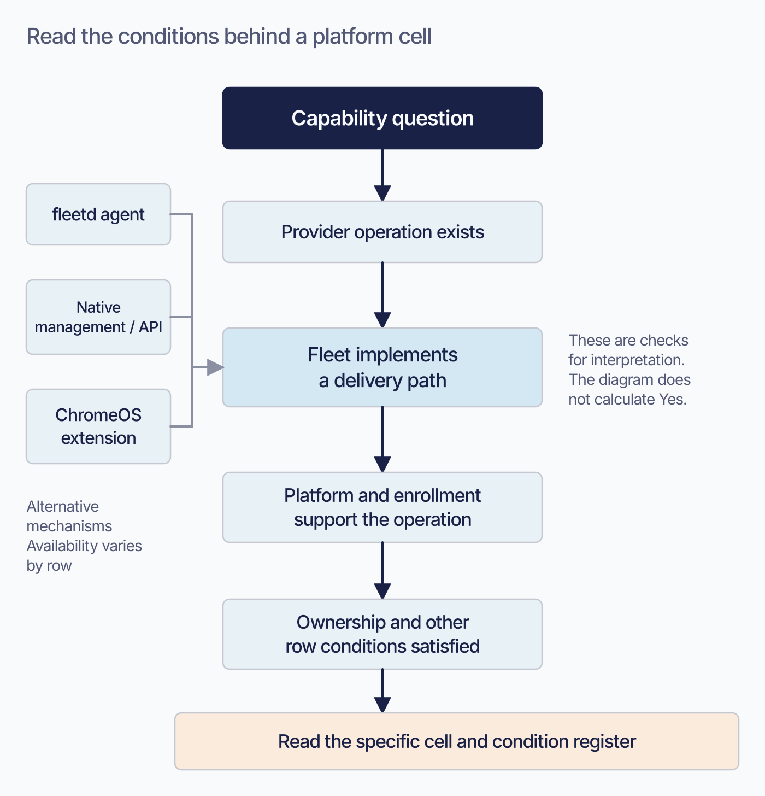
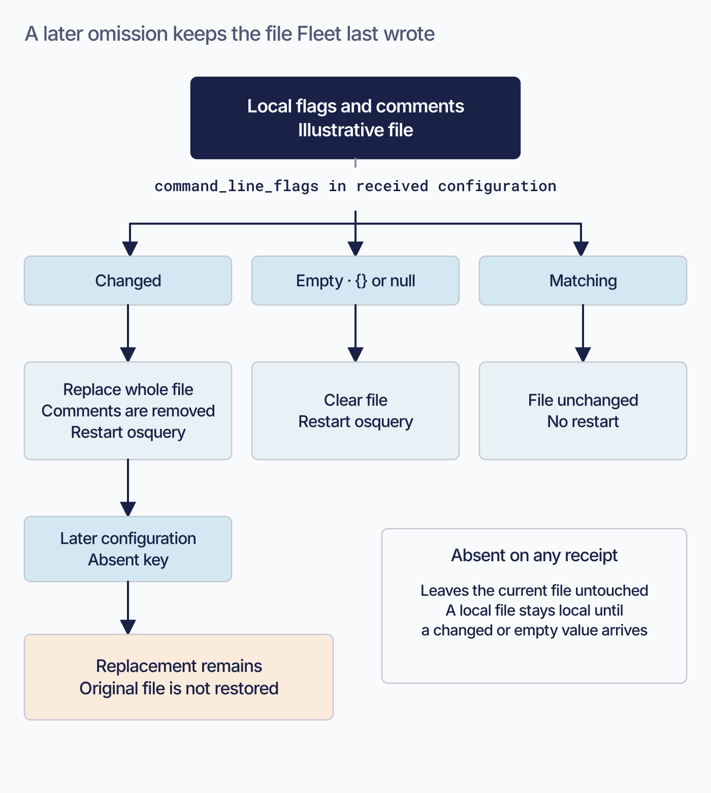
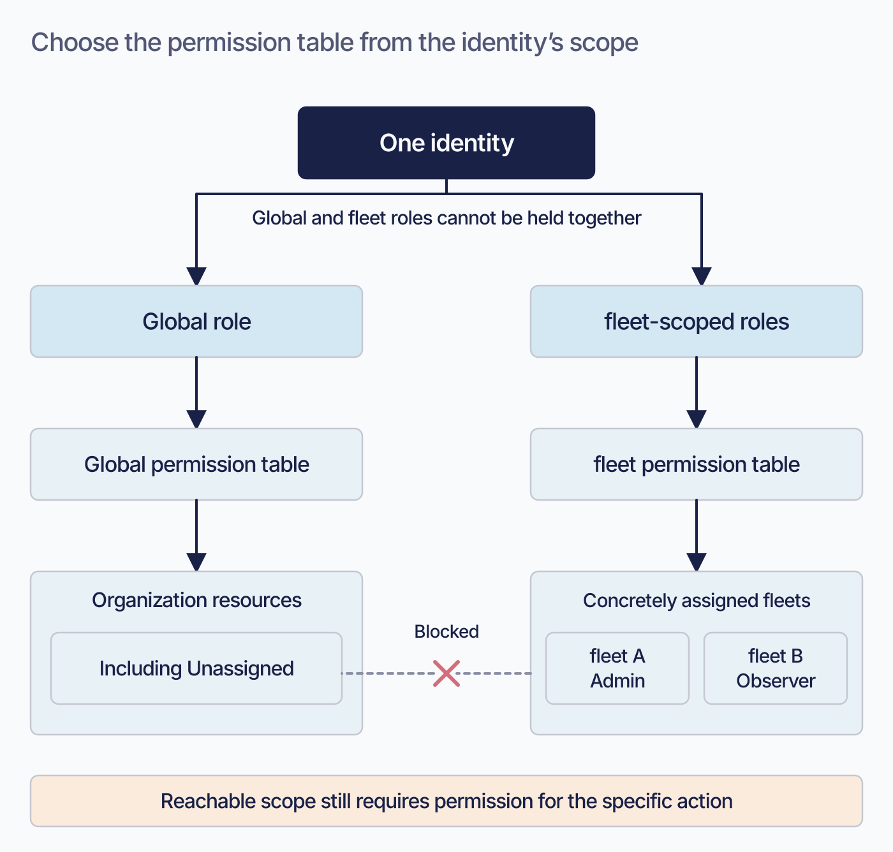
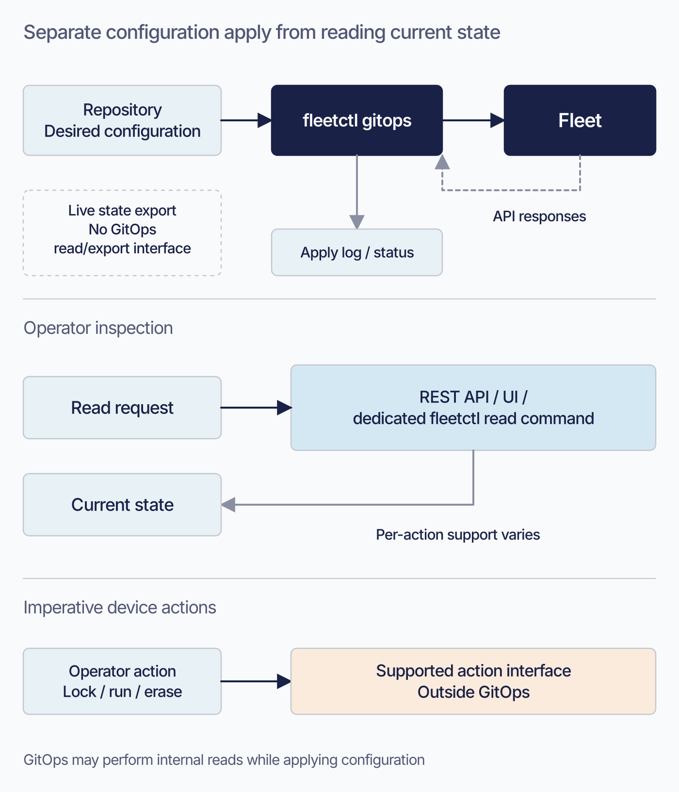
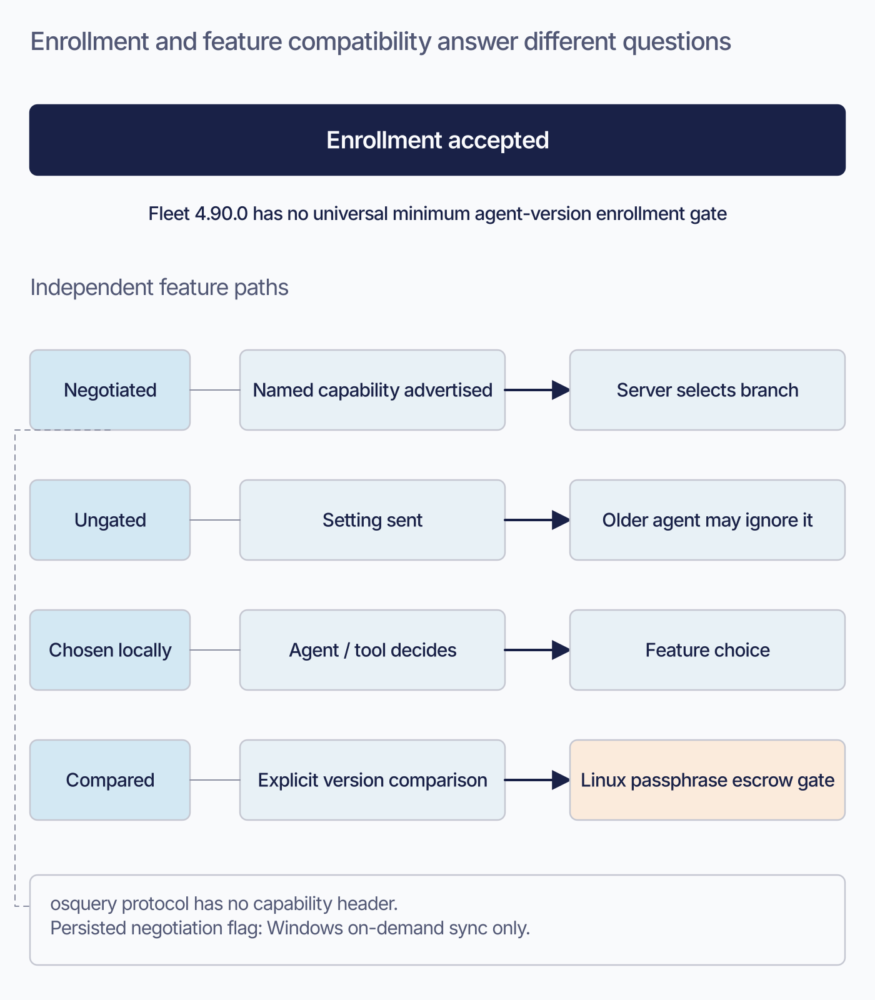
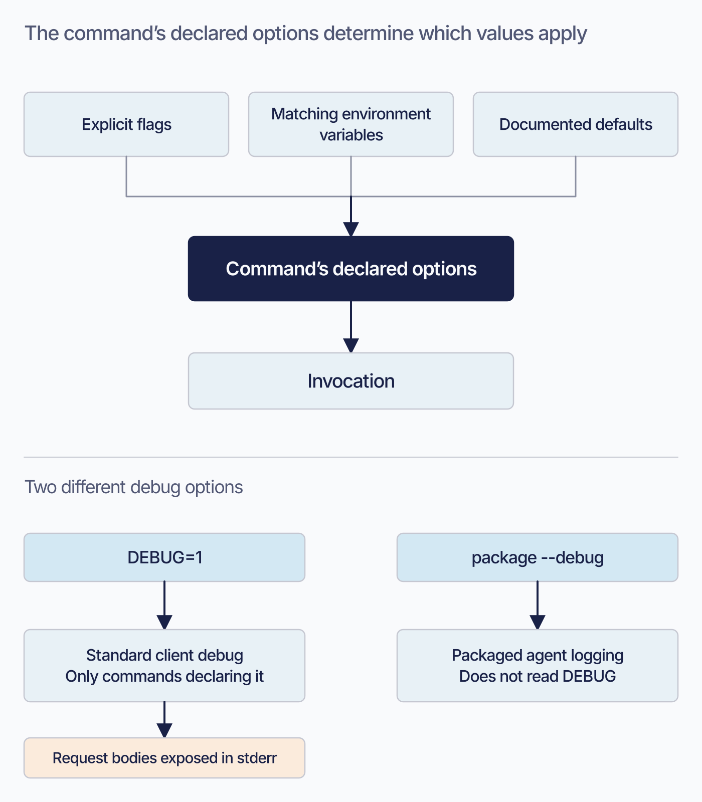
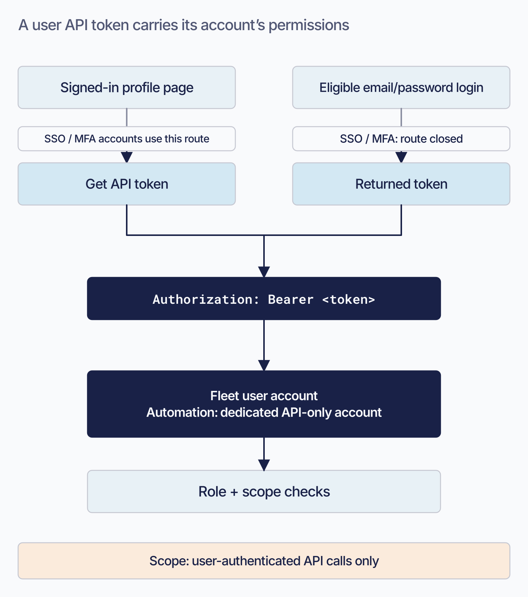
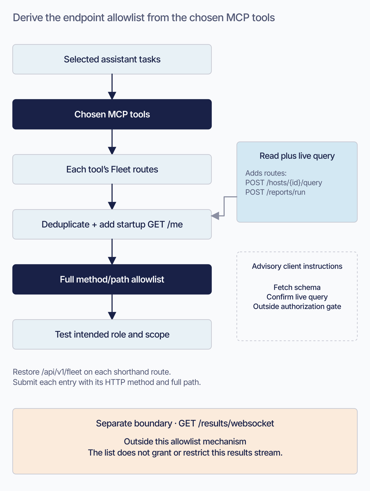

The Missing Fleet Manual · Overnight visual production
Appendices: visual review
10 candidates, prepared for the final manual-wide review. Fleet is the product, company, or server; host groups are lowercase fleet/fleets. Published chapter prose and artwork remain in place.
All parts · Full chapter briefs
Default: 720 px

Proposed 2026-09-08; editorial brief, not technical re-verification. Reduce the long ID-column explanation. Preserve exact exception IDs, split-row details, counts, and linked instructions in the native reference text. Keep current prose and this TODO until the actual image is reviewed. Then check alt text against the artwork and retain an accessible summary plus all required technical qualifications.
Proposed 2026-09-08; editorial brief, not technical re-verification. Reduce the structural overview above the matrix. Keep all cells, condition IDs, definitions, and version qualifications as searchable Markdown. Keep current prose and this TODO until the actual image is reviewed. Then check alt text against the artwork and retain an accessible summary plus all required technical qualifications.
Proposed 2026-09-08; editorial brief, not technical re-verification. Replace the paragraph explaining replacement and failed restoration. Retain the exact four-case table and packaging-input preservation advice. Keep current prose and this TODO until the actual image is reviewed. Then check alt text against the artwork and retain an accessible summary plus all required technical qualifications.
Proposed 2026-09-08; editorial brief, not technical re-verification. Reduce the table-selection and Unassigned explanation. Keep the complete permission matrices, per-action conditions, and service-identity restrictions. Keep current prose and this TODO until the actual image is reviewed. Then check alt text against the artwork and retain an accessible summary plus all required technical qualifications.
Proposed 2026-09-08; editorial brief, not technical re-verification. Replace the opening no-read-direction explanation. Preserve exact cell semantics, schema closure, allow-unknown-keys behavior, and the enumerated exceptions. Keep current prose and this TODO until the actual image is reviewed. Then check alt text against the artwork and retain an accessible summary plus all required technical qualifications.
Proposed 2026-09-08; editorial brief, not technical re-verification. Reduce the paragraph introducing compatibility mechanisms. Retain all version floors, exact feature exceptions, direction-of-compatibility qualifications, and the native mechanism table. Keep current prose and this TODO until the actual image is reviewed. Then check alt text against the artwork and retain an accessible summary plus all required technical qualifications.
Proposed 2026-09-08; editorial brief, not technical re-verification. Replace the environment-variable hazard explanation with the contrasting debug example. Keep the full flag/environment table, command exceptions, and explicit-flag/per-job-config guidance. Keep current prose and this TODO until the actual image is reviewed. Then check alt text against the artwork and retain an accessible summary plus all required technical qualifications.
Proposed 2026-09-08; editorial brief, not technical re-verification. Condense the two token-acquisition paragraphs and account/credential distinction. Keep the exact header example, endpoint authentication catalog, and automation-account instructions. Keep current prose and this TODO until the actual image is reviewed. Then check alt text against the artwork and retain an accessible summary plus all required technical qualifications.Proposed 2026-09-08; editorial brief, not technical re-verification. Atmosphere only. Keep all alphabetical entries, real links, see references, and noun-versus-outcome navigation instructions intact; do not interrupt letter groups with decoration. Keep current prose and this TODO until the actual image is reviewed. Then check alt text against the artwork and retain an accessible summary plus all required technical qualifications.
Proposed 2026-09-08; editorial brief, not technical re-verification. Reduce the paragraph explaining how the starter lists are derived. Keep the complete copyable allowlists, prefixes, method/path format, route exception, and role requirements. Keep current prose and this TODO until the actual image is reviewed. Then check alt text against the artwork and retain an accessible summary plus all required technical qualifications.